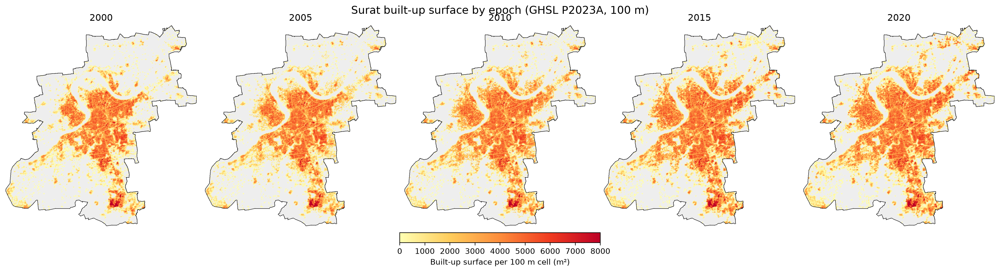
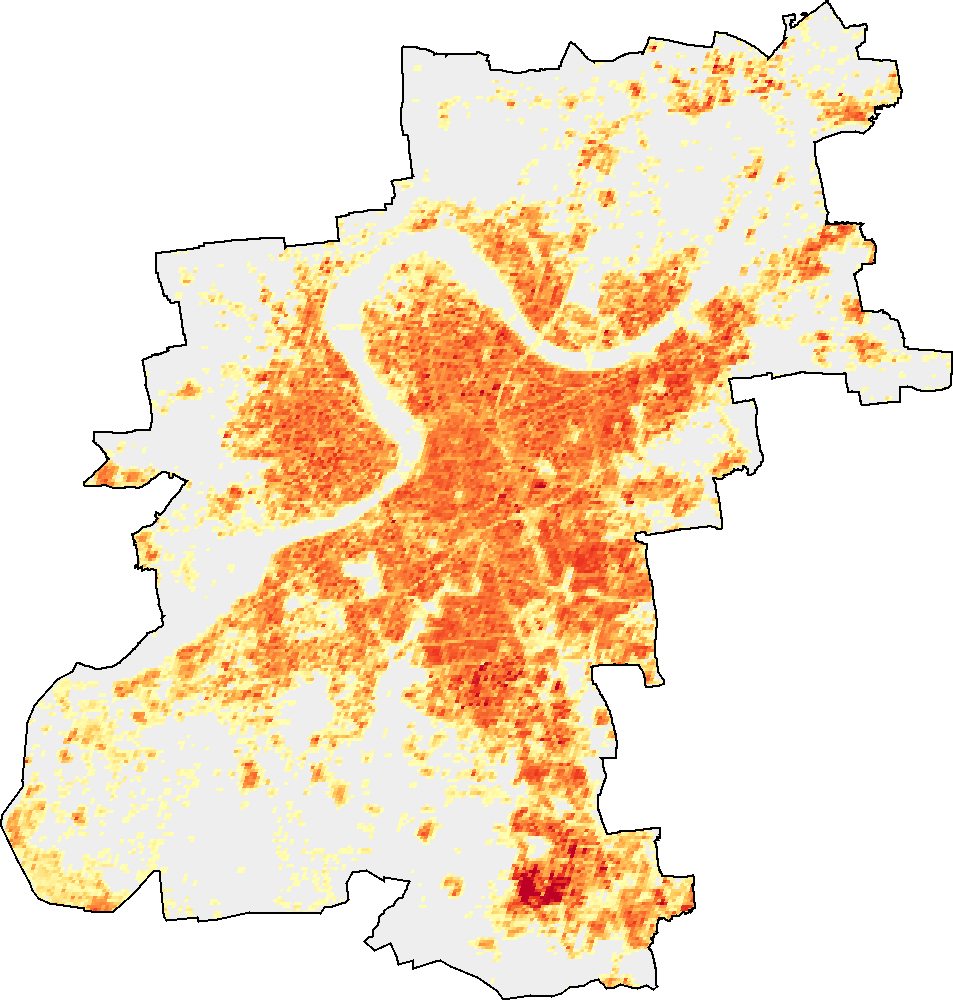
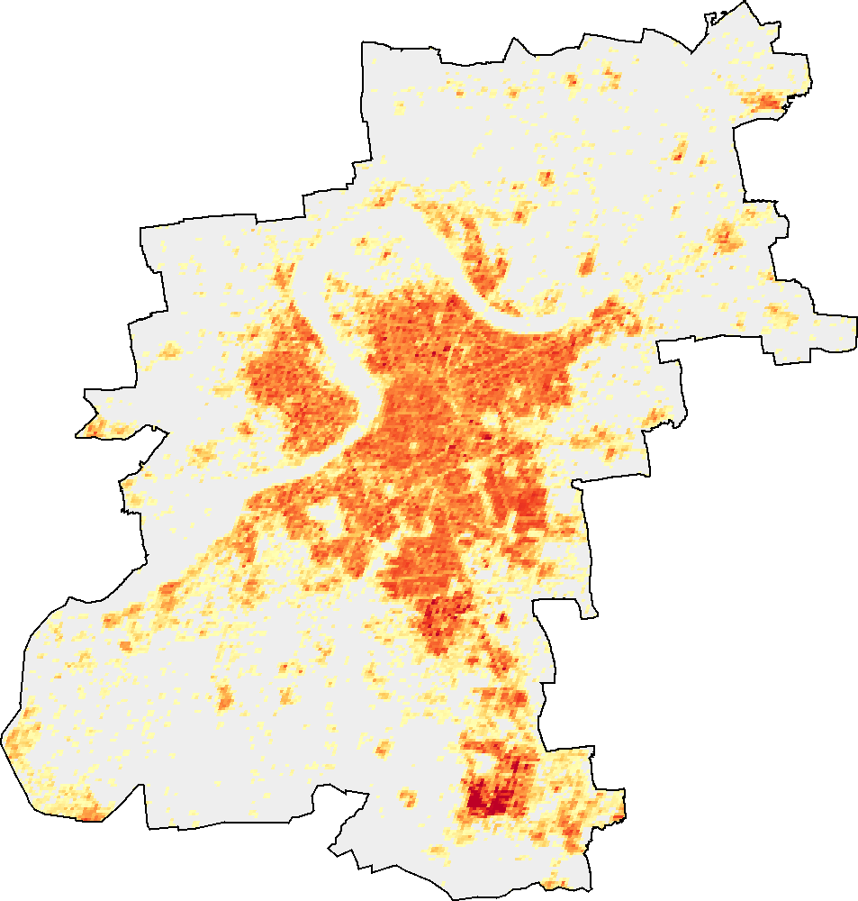
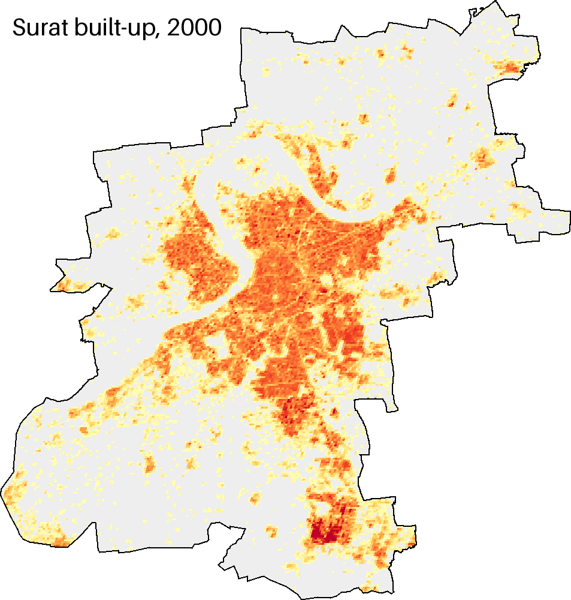
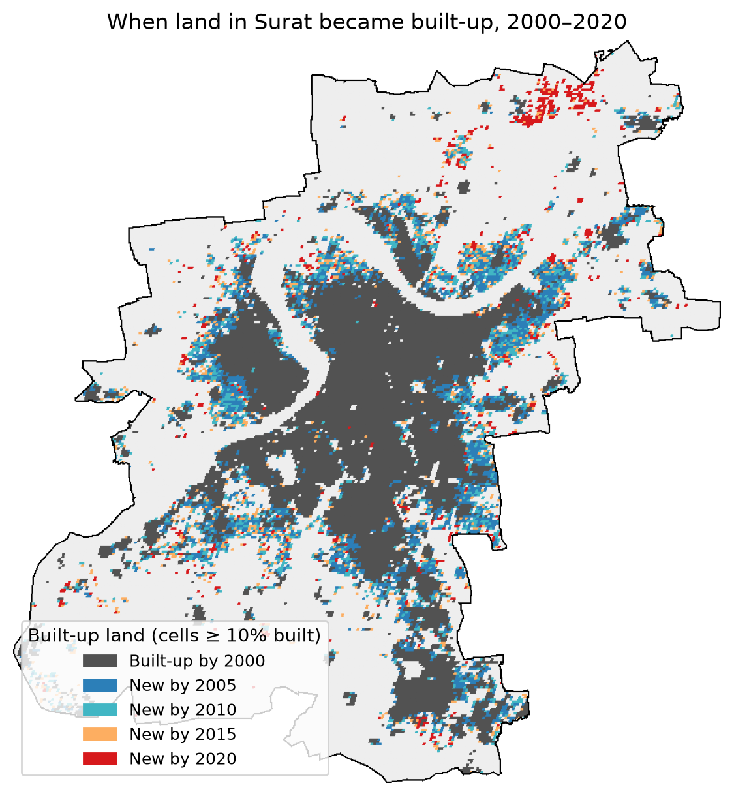
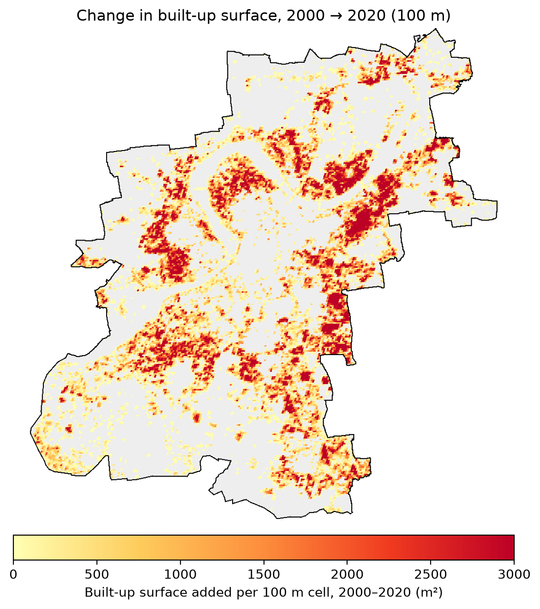
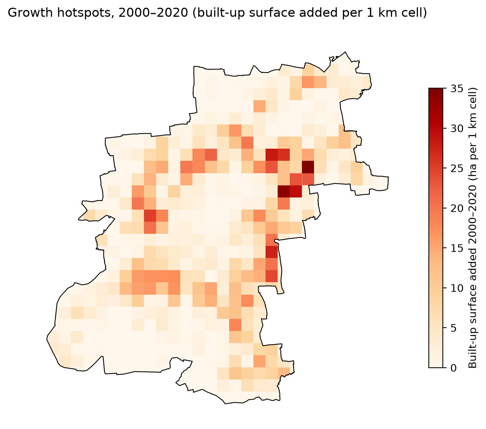
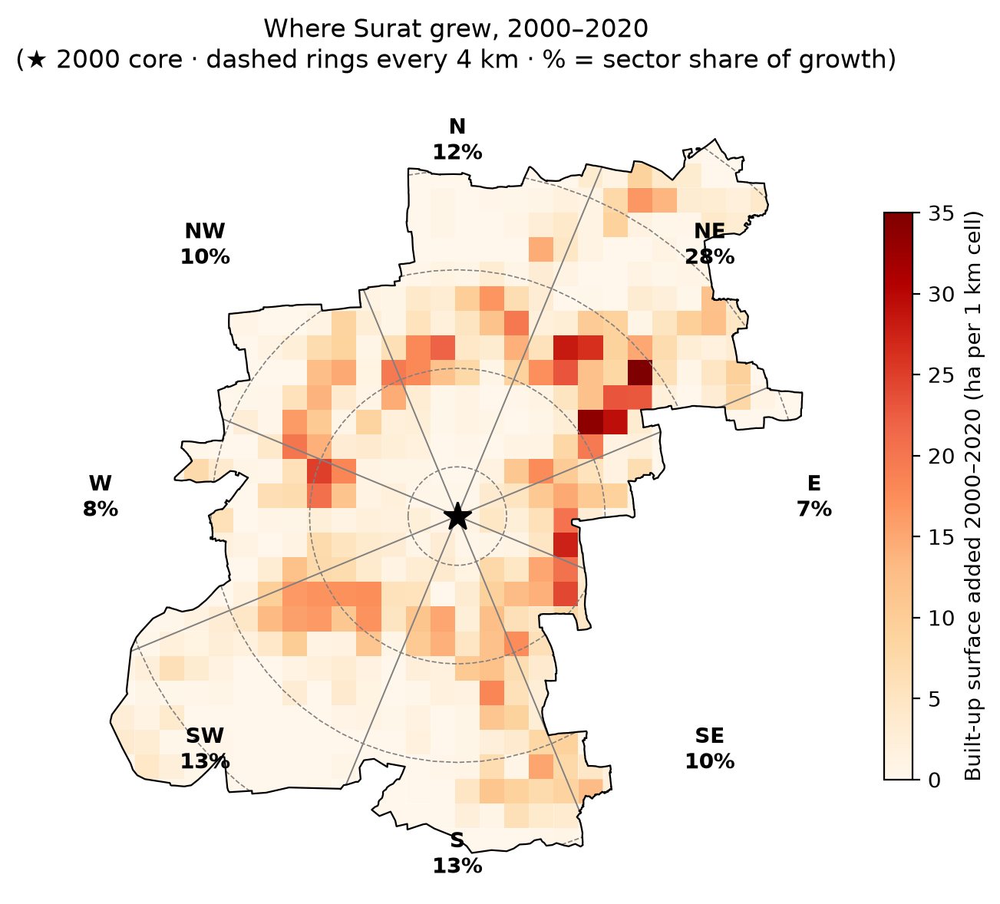

Question and Method
Question. How did the total built-up surface of Surat change between 2000 and 2020, and where are the major growth zones?
Data and boundary. I used GHSL Built-up Surface (JRC/GHSL/P2023A/GHS_BUILT_S), a 100 m grid giving the m² of built-up area in each cell, for the 2000, 2005, 2010, 2015 and 2020 epochs. It was clipped to the Surat Urban Local Body boundary from the Swachh Bharat Mission layer (sources are listed below).
Method. In Google Earth Engine (Python/geemap) I summed built-up surface inside the boundary for each epoch to get the area and percentage change. To see the footprint, I counted a 100 m cell as built-up land if at least 10% of it is built. To find the growth zones, I summed growth on a 1 km grid and grouped it by distance from the 2000 core and by compass direction. GHSL epochs are multi-year composites, so no seasonal window or cloud filter applies. Every epoch is mapped on the same colour scale.
Explore the map
Surat is divided into 1 km cells. Step through the epochs or press play to watch building cover spread. Switch to growth to see where the most was added, filter by compass sector, and hover or tap any cell for its numbers.
Show
Epoch
Sector
Building cover, 2020
The map opens on 2020. Building cover is the share of each cell's area covered by buildings. Basemaps © Esri. Open the Folium time-slider version.
How much it grew
Built-up surface rose from 38.3 km² to 60.3 km², which is from 8.7% to 13.7% of the city's 438.9 km². That is about 2.3% a year. Growth peaked in 2005–10 and then dropped sharply: only 2.5 km² was added in 2015–20, about a third of the earlier pace.
Total built-up surface (km²)
Show the table
| Epoch | Built-up surface (km²) | Share of city | Added (km²) | Growth per year |
|---|---|---|---|---|
| 2000 | 38.35 | 8.7% | – | – |
| 2005 | 44.00 | 10.0% | 5.66 | 2.8% |
| 2010 | 51.19 | 11.7% | 7.18 | 3.1% |
| 2015 | 57.82 | 13.2% | 6.63 | 2.5% |
| 2020 | 60.30 | 13.7% | 2.48 | 0.8% |
At 100 m detail

Drag to compare 2000 and 2020


Animated, 2000 to 2020

Outward or denser?
Built-up surface can grow in two ways. New land can become built-up, so the footprint expands, or land that was already built-up can get more buildings, which is densification. Surat mostly expanded. Its built-up footprint grew 58%, from 103.9 to 163.9 km². Meanwhile the share of that footprint covered by buildings hovered around 37%.
The timing suggests a pattern of "claim, then fill". In 2000–05 the city took on 25.6 km² of new built-up land, and density inside the footprint dipped to 34%. Later epochs added less land each time, and density climbed back to 37% as those areas filled in.
Footprint vs built-up surface (km²)
Hover a point to see the density inside the footprint.
Where the 2000–2020 gain happened
Expansion is growth in cells that crossed the 10% rule between 2000 and 2020. Densification is growth in cells already above it in 2000. Scattered is growth in cells still below 10% in 2020.

Where it grew


Distance from the core
The core is the built-up-weighted centre of Surat in 2000. The inner 0–2 km was already saturated and barely changed, going from 36% to 38% covered. Growth was concentrated 4–10 km out, which took 72% of the total. The 6–8 km ring alone took 29%, and its building cover more than doubled, from 6.2% to 14.9%. Beyond 10 km, growth thins out.
Building cover by distance from the core (%)
Direction
The north-east led by a wide margin. It took 28% of all growth, and its built-up surface nearly doubled (+96%). The south-west (+82%) and south-east (+78%) also grew fast relative to their small 2000 base. The south and north added a lot in absolute terms but more slowly in relative terms, because they already had more built-up land in 2000.
Growth by compass sector
Click a sector to highlight it on the map.

Show the sector table
| Sector | 2000 (ha) | 2020 (ha) | Added (ha) | Share of growth | Increase |
|---|---|---|---|---|---|
| North-east | 631 | 1,236 | 605 | 27.5% | +96% |
| South-west | 361 | 655 | 294 | 13.4% | +82% |
| South | 774 | 1,053 | 278 | 12.7% | +36% |
| North | 662 | 921 | 258 | 11.8% | +39% |
| North-west | 517 | 732 | 215 | 9.8% | +42% |
| South-east | 271 | 483 | 212 | 9.7% | +78% |
| West | 370 | 552 | 182 | 8.3% | +49% |
| East | 246 | 397 | 151 | 6.9% | +61% |
Discussion
Spatial pattern
In 2000 Surat already had a dense core around the bend of the Tapi, and over the next 20 years that core barely changed. Growth went into a ring around it, 4–10 km out, with the north-east taking the most. It was also concentrated rather than spread evenly: a tenth of the city's 1 km cells account for almost half the new surface. So the major growth zones are a few clusters, mainly in the north-east and along the eastern and south-western edges of the 2000 footprint.
Temporal change
The city added 22 km² of built-up surface (+57%). Growth peaked in 2005–10 and slowed sharply in 2015–20. Most of the gain (71%) came from new land becoming built-up, not from existing areas getting denser. The timing shows a cycle of claiming then filling: large footprint additions early, when density inside the footprint dipped, and smaller additions later, when it recovered. Over this period Surat's growth was mainly peripheral expansion, with the inner city close to saturation in GHSL terms.
Limitations
- Spatial resolution. GHSL is a 100 m grid that estimates building cover. It does not map individual buildings, and roads and very small plots are not well captured.
- Temporal resolution. There are only 5-year epochs, so the exact year of construction is unknown and short bursts of growth are averaged out.
- Modelled data. GHSL is derived from satellite imagery plus modelling. Its built-up surface never decreases, so demolition and redevelopment are not captured. The 2020 epoch is the most model-dependent, so treat the 2015–20 slowdown with caution rather than as a confirmed real-world slowdown.
- Analytical choices. The 10% built-up rule, the 1 km grid, the 2 km rings and the 8 sectors are my choices and not official zones. Different choices would shift the numbers somewhat.
- Boundary. The SBM municipal boundary is used. Growth just outside it, and any recent boundary extensions, are not counted.
Sources
- Built-up data: GHSL Built-up Surface P2023A in the Earth Engine catalog (
JRC/GHSL/P2023A/GHS_BUILT_S), from the European Commission's Global Human Settlement Layer project - Boundary: Surat ULB polygon (ULB code 802629) from the Swachh Bharat Mission layer, released via ramSeraph/indian_admin_boundaries (CC0, attribution to datameet and the original government source)
- Basemaps in the interactive maps: Esri World Light Gray Canvas and World Imagery
Code and downloads
- Jupyter notebook with the full code and outputs
- Surat boundary (GeoJSON)
- 1 km grid with all epochs (GeoJSON)
- Tables: totals, rings, sectors